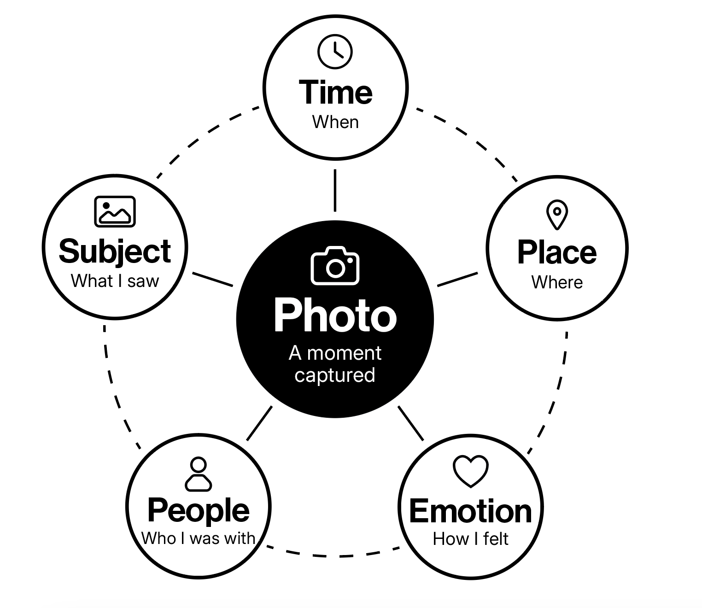

01. Inspiration
What does movement mean to me?
MOVING began with a simple observation. While organizing years of photographs, I noticed that my strongest emotional changes often occurred during periods of movement rather than moments of stability. Looking across the archive revealed not isolated memories, but an ongoing flow of places, relationships, and experiences. This project explores that continuous process of change through the photographs I have taken.
02. About the Archive
A personal archive from 2023–2026
The archive in MOVING consists of photographs taken between August 2023 and August 2026. This three-year period marks the beginning of my adult life, when I turned eighteen and began moving frequently between South Korea and New York as an international student.
Rather than documenting a single place, these photographs capture a period of constant transition. During these years, my environments, relationships, routines, and perspectives continuously changed. Looking back, I realized that this archive records not only where I traveled, but also how my identity gradually formed through movement.

03. About the Data
Every photograph becomes one record.
Each photograph in MOVING is treated as a single record within a larger archive. The photographs were taken between August 2023 and August 2026, documenting a period of continuous movement between South Korea and New York. Alongside metadata such as time and place, every image is annotated with people, subject matter, and emotion. Together, these layers allow photographs to be connected, filtered, and reorganized, revealing patterns that remain invisible when images are viewed individually.
05. Emotion Classification
Color as emotional metadata
The emotional categories used throughout MOVING are based on Robert Plutchik's Wheel of Emotions. The wheel provides a consistent vocabulary for describing emotions while allowing photographs to be organized within a broader emotional structure.
Rather than inventing new categories for every image, using Plutchik's framework makes emotional relationships easier to compare across different places, people, and moments.

06. Why Relationships Matter
Individual photographs record moments.
A single photograph captures only one moment. However, memory is rarely experienced as isolated images. Places connect to people, people connect to emotions, and one memory continuously leads to another.
Rather than reducing photographs into numbers, data visualization becomes a way of revealing these invisible relationships. Through filtering, reorganizing, and connecting thousands of photographs, MOVING visualizes the movement of memory itself.
Photographs freeze moments. Relationships between photographs reveal movement.